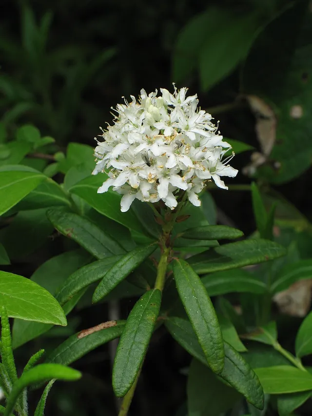

Labrador tea
Labrador tea is a edible flower or tea you can forage all year round across Canada. Evergreen bog shrub with narrow leathery leaves rolled under at the edges and rusty fuzz beneath; white flower clusters in June.

When is Labrador tea in season in Canada?
Labrador tea is usually in season all year round. Timing shifts with weather, latitude and altitude.
Where does Labrador tea grow in Canada?
Labrador tea grows across Canada. Regions: British Columbia, Prairies, Ontario, Quebec, Atlantic Canada, The North.
How do you recognise Labrador tea?
Evergreen bog shrub with narrow leathery leaves rolled under at the edges and rusty fuzz beneath; white flower clusters in June.
How do you harvest Labrador tea?
Pick flowers on a dry, sunny morning once the dew has gone, when the scent is strongest. Take a few heads from each plant so it can still set fruit.
How do you eat Labrador tea?
A few leaves steeped as tea, a traditional drink of many First Nations.
How do you store Labrador tea?
Dry leaves.
What can you cook with Labrador tea?
- Labrador tea: A few leaves steeped weak, sweetened with a little maple syrup.